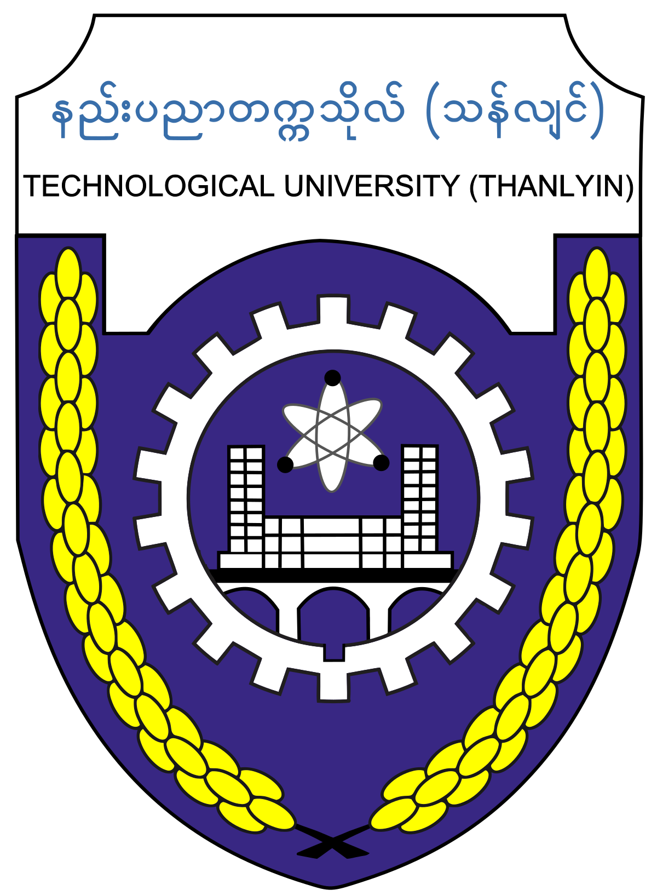

Kaung Myat San
Summary
An energetic and detail-oriented young structural engineer who relishes resolving structural problems in alignment with Structural Engineering, Geotechnical Engineering and Earthquake Engineering.
Skilled in AutoCAD, REVIT (Architecture & Structure), NavisWorks, Synchro, BlueBeam, Structural Design Softwares (ETABS, SAP2000, STAAD.Pro,CSICols,IDEA StatiCa, SAFE), Twinmotion and Lumion.
Well-versed in the following standard code requirements:
- Myanmar National Building Code MNBC
- International Building Code IBC
- British Standards BS
- Eurocodes EC
- American Society of Civil Engineers ASCE
- American Concrete Institute ACI
- American Institute of Steel Construction AISC
- National Design Specification (NDS) for Wood Construction
Education
University of Portsmouth
Master of Science - MSc, Construction Project Management
Jan 2023 - Present

Thanlyin Technological University (Myanmar)
Bachelor of Engineering - BE, Civil Engineering
Sep 2014 - Mar 2022
Relished attending analysis-based classes ranging from geotechnical engineering, theory of structures,
design of timber structures, foundation engineering, design of reinforced concrete structures, design of
selected structures to design of steel structures.
Awarded the Best Striker Prize of Rector's Cup
Work Experience
- Administrative Assistant - XYZ Corp.
June 2018 - Present
- Assisted with scheduling appointments and meetings
- Managed incoming and outgoing mail and correspondence
- Prepared reports and presentations using Microsoft Office Suite
- Customer Service Repersentative - ABC Inc.
June 2014 - May 2018
- Answered customer inquiries via phone and email
- Resolved customer complaints and issues
- Maintained customer records and updated account information
Skills
- Civil Engineering ⭐️⭐️⭐️⭐️⭐️
- Structural Engineering ⭐️⭐️⭐️⭐️⭐️
- Structural Analysis ⭐️⭐️⭐️⭐️⭐️
- Twinmotion ⭐️⭐️⭐️⭐️⭐️
- CSI SAFE ⭐️⭐️⭐️⭐️⭐️
- STAAD.PRO ⭐️⭐️⭐️⭐️⭐️
- SAP2000 ⭐️⭐️⭐️⭐️⭐️
- Microsoft Project ⭐️⭐️⭐️⭐️⭐️
- Lumion ⭐️⭐️⭐️⭐️⭐️
- Enscape ⭐️⭐️⭐️⭐️⭐️
- AutoCAD ⭐️⭐️⭐️⭐️⭐️
Awards and Certifications
- REVIT Specialized Structures
- Tekla Structures
Organizations
- American Institute of Steel Construction (AISC)
- American Society of Civil Engineers (ASCE)
- Association for Project Management (APM)
- Institution of Civil Engineer (ICE)
- Myanmar Engineering Society (MES)
Others
© Kaung Myat San. All rights reserved.